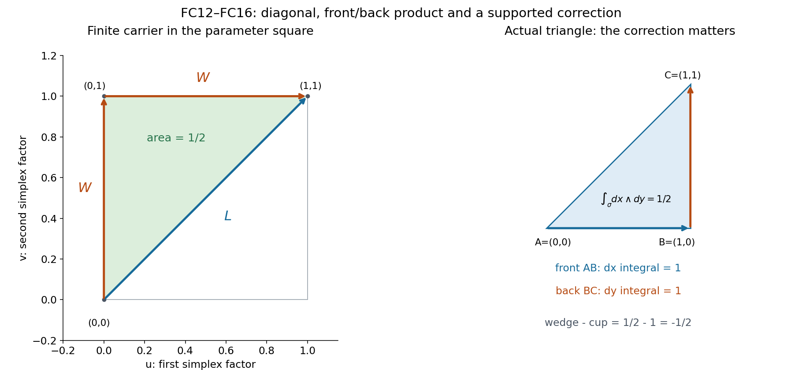
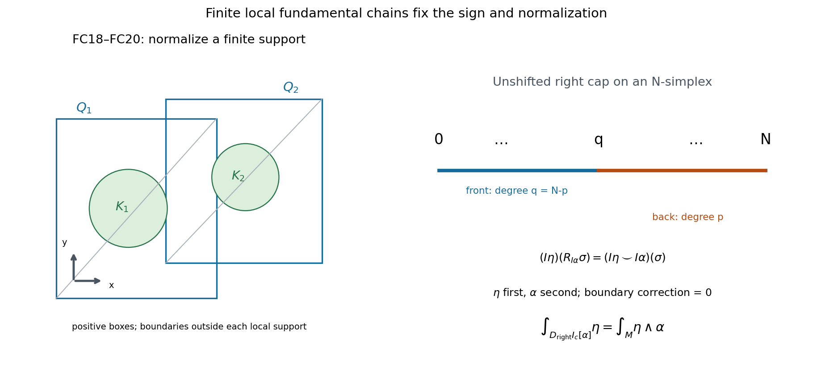

Complete supplied learner for L127
The argument below uses the precise real CD034 and selected orientation/right-cap hypotheses. The finite support-preserving cup/wedge correction and compact top-form normalization construct form duality and identify its actual map with the unshifted right cap. With the corrected annular calculation in L126, this gives the real normal-first tube coefficient.
The statements use the specified orientation, Thom and comparison hypotheses. Integral descent, rational-form spanning, the particular affine C8 representative, coefficient conventions and component constancy require their additional arguments. Exposition: GPT-6.1 Sol (OpenAI), Ultra, October 2026; CC0-1.0. L124 gives the projective-exhaustion context; L125 proves the geometric finite-chain H statement.
Why a compact form gives this particular right-cap cycle
Original exposition and illustrations: CC0 1.0. This lesson accompanies the complete argument in form-right-cap-comparison.md. The claim is about real smooth forms and real singular homology at the exact CD034 and selected DGCHAR entries.
The central equality is
\[ \int_{D_{\mathrm{right}}^p I_c[\alpha]}\eta =\int_M\eta\wedge\alpha , \]where \(\alpha\) is closed and compactly supported, \(\eta\) is closed of complementary degree, and \(M\) is oriented. The right-cap formula evaluates \(\alpha\)'s cochain on the back face of an oriented simplex and retains its front face. Evaluating \(\eta\) on that retained face gives \(\eta\)'s cochain first in the cup product. This fixes the displayed order.
There are two issues to settle. Integrating a wedge and multiplying two face integrals usually give different numbers on an individual simplex. Also, on a noncompact manifold there is no single finite chain covering the whole manifold. The proof resolves the first issue by a correction carried inside the original simplex, and the second by a finite fundamental chain only over the compact support.

Figure1 — the actual one-simplex parameter calculation. The square is \(\Delta^1\times\Delta^1=[0,1]^2\), with first-factor coordinate \(u\) horizontal and second-factor coordinate \(v\) vertical, oriented \(du\wedge dv\). The diagonal \(L\) goes from \((0,0)\) to \((1,1)\). The front/back cross-chain \(W\) first goes vertically to \((0,1)\), then horizontally to \((1,1)\). The nondegenerate contribution to \(H_1\) is the affine triangle \([(0,0),(0,1),(1,1)]\) with coefficient \(-1\). It has positive signed area \(1/2\) and boundary \(L-W\). The full unnormalized \(H_1\) additionally contains \([(0,0),(0,0),(1,1)]-[(0,0),(0,0),(0,1)]\); these have zero two-form integrals and cancelling boundaries, and are retained in the exact chain calculation. If the original edge is wholly outside the support of \(\alpha\), every point of every term maps to two points outside that support, so the integrand with \(\alpha\) in its second factor is zero. The right panel computes the nonmultiplicativity on an actual oriented triangle in \(\mathbb R^2\). Neither panel is a drawing of a global fundamental cycle.
Worked example1. A correction of exactly minus one half
Take the positively oriented affine triangle \(\sigma=[A,B,C]\) in \(\mathbb R^2\), with \(A=(0,0)\), \(B=(1,0)\), \(C=(1,1)\). Put \(\eta=dx\). Choose a compact smooth cutoff \(\chi\) equal to one on a neighbourhood of this closed triangle, and let \(\alpha=d(\chi y)\). It is an actual globally closed compactly supported one-form; on the triangle and its edges it equals \(dy\).
The wedge integral on the triangle is its area,
\[ I(\eta\wedge\alpha)(\sigma)=\int_\sigma dx\wedge dy=\frac12. \]The ordered cup product instead uses the front edge \(AB\) and back edge \(BC\):
\[ (I\eta\smile I\alpha)(\sigma) =\left(\int_{AB}dx\right)\left(\int_{BC}dy\right)=1. \]For an edge from \(P\) to \(Q\), the triangle in Figure1 gives
\[ B(\eta,\alpha)([P,Q]) =\frac12(Q_x-P_x)(Q_y-P_y) \]provided the cutoff is one on the edge. Thus \(B(BC)=0\), \(B(AC)=1/2\), and \(B(AB)=0\). With \(\partial[A,B,C]=[B,C]-[A,C]+[A,B]\),
\[ \delta B(\sigma)=0-\frac12+0=-\frac12 =I(\eta\wedge\alpha)(\sigma) -(I\eta\smile I\alpha)(\sigma). \]This calculation verifies the sign of the correction rather than pretending that integration is multiplicative before passing to cohomology. On a local fundamental chain whose boundary lies outside \(\operatorname{supp}\alpha\), that correction evaluates to zero on the boundary.

Figure2 — finite support and exact evaluation order. The left panel is an oriented coordinate-plane schematic: a compact support \(K\) lies in the interiors of finitely many coordinate boxes, and a cutoff decomposition writes a top form as the finite sum of top forms supported inside those boxes. Each positively oriented triangulated box evaluates its local top form by the usual integral; its boundary is outside that local support. The circles depict possible support locations, not a claimed formula for a manifold's curvature or for a chosen differential form. The right panel is the actual degree ledger on an \(N\)-simplex: the front face has degree \(q=N-p\), the back face has degree \(p\), and their shared vertex is \(q\). It displays the chain/cochain identity behind FC24–FC25, with \(\eta\) first and \(\alpha\) second. A finite \(\mu_K\) suffices; an infinite chain over \(M\) is unnecessary.
Worked example2. A positive point from a normalized top form
Choose a nonnegative smooth compact function \(f\) on the oriented plane with \(\int_{\mathbb R^2}f\,dx\,dy=1\), and set \(\alpha=f\,dx\wedge dy\). This is a closed compact two-form. The complementary closed zero-form \(\eta=1\) is allowed even though it is not compact. The proved equality gives
\[ \left\langle 1,D_{\mathrm{right}}^2 I_c[\alpha]\right\rangle=1. \]The ordinary real \(H_0(\mathbb R^2)\) consists of point coefficients, with homologous points identified: the oriented line segment between two points has boundary their difference. Hence the class is one positive point, not minus one point and not an infinite sum of points. Conversely a negative orientation of the plane changes the fundamental class and the normalized integral together. This example checks the top-degree normalization, distinct from the cochain-product issue of Example1.
For \(p=0\) on a connected noncompact plane, a closed compact zero-form must be constant and compactly supported, hence zero. There is no nonzero compact zero-form generating an ordinary two-dimensional fundamental cycle of the whole plane. On a compact oriented surface a constant zero-form is compact, and the same statement correctly yields its finite ordinary fundamental class.
Worked example3. The sign in the normal-circle receiver
Use the actual even-dimensional CO046 codimension-two setup. In a product normal chart of an oriented four-manifold, take base annulus coordinates \((s,\phi)\) with base orientation \(ds\wedge d\phi\), and normal polar coordinates \((r,\theta)\) with normal orientation \(dr\wedge d\theta\) for \(r>0\). Orient the ambient chart normal first: \(dr\wedge d\theta\wedge ds\wedge d\phi\).
Let \(f(s)\) be smooth, compactly supported in the base interval, with \(\int f(s)\,ds=1\). Set
\[ \beta=-f(s)\,ds,\quad \omega=\frac{d\phi}{2\pi}\wedge\frac{d\theta}{2\pi},\quad \delta_{\mathrm{dR}}\beta=d\chi(r)\wedge\beta, \]where \(\chi=1\) near \(r=0\), is zero for large \(r\), and \(\int\chi'(r)\,dr=-1\). The normal circle is integrated first. Inserting its positive tangent into \(\omega\) gives
\[ g=\pi_*\omega=-\frac{d\phi}{2\pi}. \]The sign is essential: \(\omega\) initially has the base differential before the normal one. Therefore
\[ \int_Yg\wedge\beta =\int_Y\frac{f(s)}{2\pi}d\phi\wedge ds=-1. \]On the ambient normal chart, relative to \((r,\theta,s,\phi)\), the list \((\phi,\theta,r,s)\) is \((4,2,1,3)\). It has four inversions, so its permutation sign is positive. The minus in \(\beta\) therefore remains:
\[ \omega\wedge d\chi\wedge\beta =-\frac{f(s)\chi'(r)}{(2\pi)^2} dr\wedge d\theta\wedge ds\wedge d\phi, \qquad\int_V\omega\wedge\delta_{\mathrm{dR}}\beta=+1. \]Now the ordered identity is exactly \((-1)^1(-1)=+1\). This explicit permutation calculation prevents a convention from being guessed from the picture. A less error-prone choice is \(\omega=(d\theta/2\pi)\wedge(d\phi/2\pi)\), which negates \(\omega\) and \(g\); then the corresponding two integrals are \(-1\) and \(+1\).
The comparison theorem identifies these periods with the real unshifted right-cap classes. It does not turn this chart calculation into a claim about an arbitrary affine C8 cycle or about rational-valued differential forms.
Six exercises with complete solutions
Exercise1. Why is the correction a relative coboundary at the same support stage, rather than only an absolute coboundary?
Solution1. If \(\alpha\) vanishes outside compact \(K\), and \(\sigma\) is wholly in \(M\setminus K\), the construction of \(H\sigma\) maps every affine parameter simplex into \(\operatorname{image}\sigma\times\operatorname{image}\sigma\). Its second factor is therefore wholly outside \(K\), and \(\operatorname{pr}_2^*\alpha=0\) there. The actual integral defining \(B(\eta,\alpha)(\sigma)\) is zero. Thus \(B\) itself vanishes on every outside simplex and belongs to \(C^*(M,M\setminus K)\). Its differential is the difference of the two supported products in that relative complex. On a relative fundamental chain \(c\), the value \(\delta B(c)=B(\partial c)\) is zero because every simplex of the boundary lies outside \(K\). An arbitrary absolute primitive would give none of these conclusions.
Exercise2. Check the two-shuffle orientation for \(\Delta^1\times\Delta^1\).
Solution2. The horizontal-then-vertical path gives vertices \((0,0),(1,0),(1,1)\). Its coordinate determinant is \(+1\), so its chain coefficient is \(+1\). The vertical-then-horizontal path gives \((0,0),(0,1),(1,1)\), whose determinant is \(-1\). Its coefficient is \(-1\). The signed affine simplex therefore also integrates a positive coordinate two-form positively. Their shared diagonal boundaries cancel because one contributes minus the edge from \((0,0)\) to \((1,1)\) and the other contributes plus that same edge after the chain coefficient is included. The outer edges remain with the orientation of the product boundary. The total integral is the full square area, as required by FC7–FC8.
Exercise3. Why can a partition of unity be used for the top-form normalization even though partitioning closed forms usually destroys closedness?
Solution3. For a closed form \(\xi\) of degree less than \(N\), \(d(\rho\xi)=d\rho\wedge\xi\) can be nonzero. The normalization step partitions a form \(\gamma\) of degree exactly \(N\). Every \(\rho_i\gamma\) is still closed, because its derivative is an \((N+1)\)-form on an \(N\)-manifold and is identically zero. Finitely many boxes suffice since the support is compact. Each top piece has its own compact support inside its box, and the original \(\mu_K\) maps to the positive orientation class at that smaller support. Stokes therefore permits comparison with the one triangulated box. Summing these finitely many ordinary integrals proves the global top-form evaluation. No analogous argument has been asserted for arbitrary lower-degree closed pieces.
Exercise4. Explain why constructing a functional on closed forms is insufficient to prove that \(D_{\mathrm{form}}\) exists.
Solution4. Ordinary singular homology uses finite cycles. On a noncompact manifold, an arbitrary linear functional on its space of closed forms need not arise from a finite cycle merely because it has a plausible integral expression. Here FC5 proves the actual compact integration isomorphism into compact singular cohomology, and the independently supplied unshifted right-cap isomorphism takes that class to an actual ordinary homology class. It is represented by a finite relative fundamental chain capped with the supported cocycle; the boundary becomes zero because the cocycle vanishes outside the support. This explicitly constructs the class and proves that the map is an isomorphism. FC15–FC18 then identify its periods. Finally CD034 separation proves uniqueness. Existence is thus established before uniqueness is used.
Exercise5. On an even-dimensional manifold, find the map normalized using \(\alpha\wedge\eta\).
Solution5. Interchanging a degree-\(p\) form and a degree-\((N-p)\) form multiplies their wedge by \((-1)^{p(N-p)}\). For even \(N\), this parity equals \(p\). Consequently the reversed-order normalization is \(D_{\mathrm{left}}^p=(-1)^pD_{\mathrm{right}}^pI_c\). The right cap in this packet has no such extra sign: its face formula gives \(I\eta\smile I\alpha\), with \(\eta\) on the front face. In the even-dimensional normal-circle formula, replacing both the base and target dualities by the reversed-order maps changes its tube coefficient from \((-1)^p\) to \((-1)^{p+1}\), since the target compact degree is \(p+1\). This is a change of specified normalization, not an orientation mistake to erase.
Exercise6. Which claims remain separate after this real comparison?
Solution6. The comparison constructs \(I_c\) and \(D_{\mathrm{form}}\) over \(\mathbb R\) and compares the specific real connecting map transported by CO046. Infinite-dimensional singular cochain duals have no automatically proved rational scalar-extension compatibility. The packet therefore does not construct or compare an independently specified rational or integral compact connecting map. It also does not show that rational projective forms span ordinary cohomology, identify a particular affine C8 chain with the projective normal tube, resolve the historical coefficient convention, or establish general component constancy. The geometric homology-vanishing entry \(H\) has its stated hypotheses and lower providers. These obligations are not closed by the successful product and support calculation. The real closed–open receiver and the ordinary pair/Thom alternative remain useful with their respective exact qualifications.
Reproduction and mathematical scope
Run the figure script to reproduce the PNG, SVG and geometry files. The diagrams display the two-dimensional parameter simplices and finite-support constructions used in the accompanying chain proof. The supplementary checker evaluates the stated finite chain and sign identities.
Complete integrated lesson · Exact original source download.